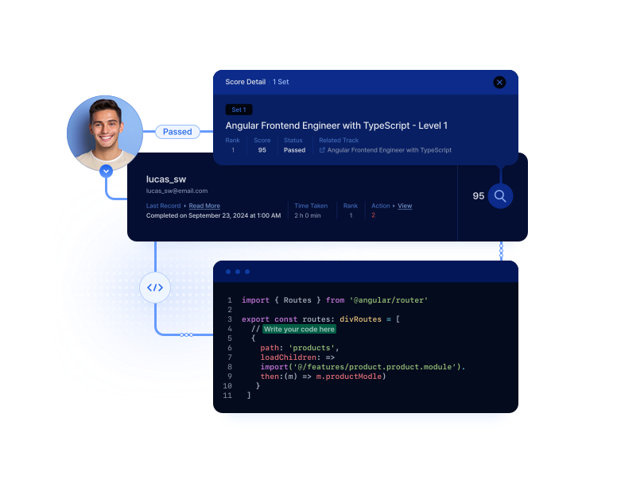
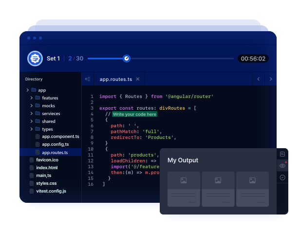
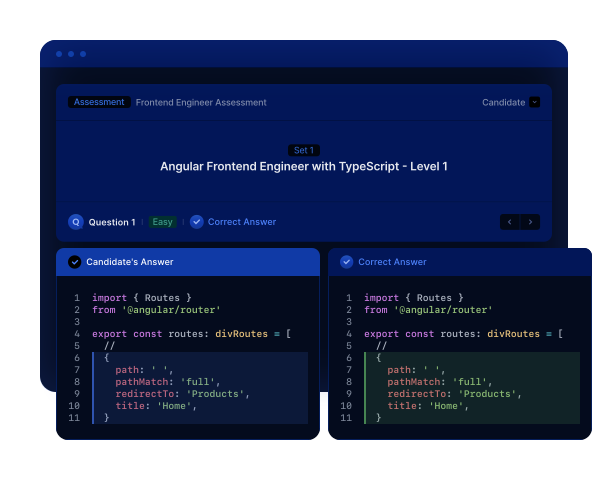
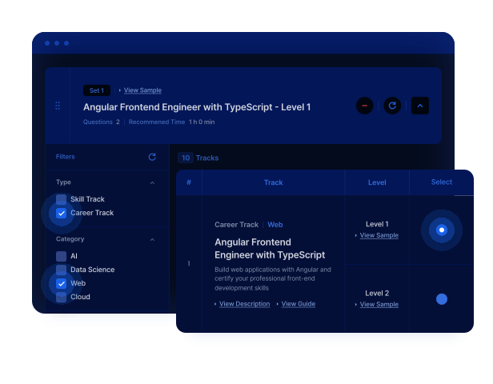
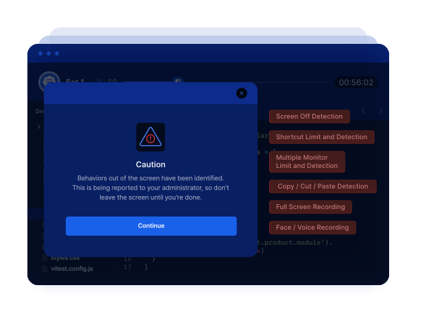

- 채용 과정에서 실무에 바로 적용 가능한 기술을 가진 인재를 어떻게 확인할 수 있을지
- 많은 지원자와 사내 인재를 어떻게 효율적으로 평가하고 무수한 인재를 빠르게 선별할 수 있을지
- 개발자의 기술을 공정하고 편견 없이 평가할 방법이 없을지
Assess · IT 역량 인증
SkillCertify
코드가 실행되는지만 보지 않습니다.
실제 직무에서 통하는 품질까지 봅니다.
50개 직무의 실제 프로젝트로 성능, 코드 품질, 문제 해결 과정을 함께 평가합니다.

이런 고민을 가지고 계시다면,
SkillCertify를 시작해보세요!
프로젝트형 평가
실무 역량을 정확하게 측정하는 프로젝트형 평가
- 실제 업무 환경에서 필요한 기술 적용력을 평가
- 이론 문제 풀이가 아닌, 실제 프로젝트와 유사한 과제로 실무 역량 측정

심층 다면 평가
코드 품질 및 성능까지 평가하는 심층 다면 평가
- 문제 해결 여부를 넘어, 코드 품질과 성능까지 세밀하게 분석
- 효율성·가독성·유지보수성·성능 최적화까지 종합 평가

기술 · 직무별 평가 콘텐츠
맞춤형 시험을 제작 가능한 기술 · 직무별 평가 콘텐츠
- 기업이 요구하는 기술 스택·직무에 맞춘 평가 콘텐츠 구성
-
웹 개발, 클라우드, AI, 데이터 분석 등 분야별 세분화된 콘텐츠로
최적의 인재 선별

AI 시험 감독 기능
공정한 평가를 보장하는 AI 시험 감독 기능
-
탭 감독, 단축키 제한, 다중 모니터 감지, 복사·붙여넣기 추적 등
온라인에서도 오프라인 수준의 공정성 제공 -
AI 감독 솔루션 ProctorMatic으로 모바일 카메라 기반
실시간 부정행위 감지

2주 PoC
2주 안에 첫 리포트를 받아보세요
작은 범위로 시작해 평가 적합성과 결과 활용 방식을 확인한 뒤, 도입 범위를 결정합니다.
-
1
접수·사전 설문
2일 이내 진행
-
2
계정·크레딧 지급
조직·데모 계정 + 크레딧 3~5개
-
3
평가 생성·초대
최대 3회 평가 운영
-
4
역량 리포트
결과 분석과 만족도 조사
-
5
리뷰 미팅
결과 활용과 도입 방안 협의
연간 계약 30% 할인(Professional 연간은 3개월 무료) · 구독+크레딧 모델 · Proctive 적용 시 초대당 1.5크레딧 · VAT 별도
고객 사례
채용부터 육성까지, 같은 기준을 사용합니다
-

글로벌 개발자 채용
150명 → 30명 → 3명
프로젝트형 평가로 후보를 선별 · 채용 기간과 비용 1/3 절감
CJ올리브네트웍스 / 해외 개발자 채용
-

SW 인재 양성
사전·사후 평가
엄격한 평가 기반의 검증된 모빌리티 SW 인재 Upskilling
현대모비스 / 모비우스 부트캠프
-

역량 정량 관리
감이 아닌 데이터
막연했던 사내 AI 활용 역량을 정량 데이터로 관리
SK텔레콤 / AI 역량 관리
FAQ
도입 전에 많이 묻는 질문
기존 코딩테스트와 무엇이 다른가요?
짧은 알고리즘 문제의 정답 여부만 보는 대신, 실제 직무 프로젝트에서 기능 정확성, 실행 성능, 코드 구조와 품질, 문제 해결 과정을 함께 평가합니다.
어떤 직무를 평가할 수 있나요?
AI, 데이터 분석, 웹 개발, 클라우드, 사이버보안, 알고리즘, 자료구조, 자동차 SW, DevOps, SW 엔지니어링 등 50개 직무 영역을 제공하며, 직무별·경력별 맞춤 구성이 가능합니다.
원격 평가의 부정행위는 어떻게 확인하나요?
카메라, 화면, 마이크와 브라우저 이벤트를 기록해 이상 징후를 표시하고, 관리자가 이벤트 타임라인과 근거를 검토해 최종 판단합니다.
채용 외에도 사용할 수 있나요?
가능합니다. 교육 전후의 역량 변화 측정, 사내 직무 인증, 승진·배치 기준, 조직 역량 진단에 동일한 평가 기준을 활용할 수 있습니다.